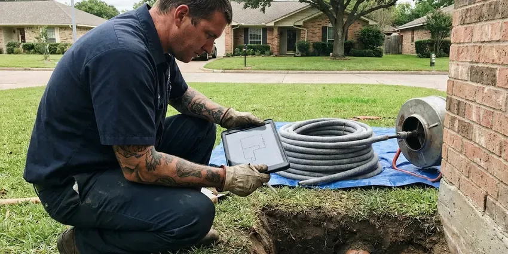

Underground Pipe Repair in Minnetonka, MN
CNV Plumbing repairs buried pipe in Minnetonka, MN and pressure tests it before backfill.
- Water, Sewer and Yard Lines
- Written Quotes Before Digging
- 811 Called Before Every Dig
- Pressure Tested Before Backfill
Leak Under the Yard in Minnetonka, MN?
Call (612) 712-9569 and tell us what you are seeing. We will get a crew out to find it.
Buried Water Line Repair in Minnetonka, MN
CNV Plumbing repairs buried water and sewer pipe in Minnetonka, MN, from a pinhole in a copper service to a cracked clay lateral. Basements are the norm, so drain tile, sump pumps and foundation drainage are central to keeping homes dry. Settling soil pulls joints apart. Most underground leaks start at a fitting, a sharp bend or a spot where the pipe rests on a rock, so we find that spot with listening gear before we dig. The hole stays small.
Our expertise includes:
- Underground sewer lateral and cleanout repair to the property line
- Sewer lateral and water main replacement
- Acoustic and tracer gas leak locating on buried lines

Additional Plumbing Repair Services in Minnetonka, MN
We offer expert plumbing repair services across Minnetonka, MN to stop leaks, clear blockages, and keep every fixture working the way it should.


Customers
Why Choose CNV Plumbing for Underground Pipe Repair in Minnetonka, MN?
Every truck carries locating gear, excavation tools and pipe in PEX, copper and PVC. One trip handles most jobs. You get one crew from the first sweep of the yard to the final pressure test, rather than three separate contractors and three invoices. The schedule stays simple.
- Small Excavations, Precise locating means one small pit instead of a long trench.
- Clean Sites, Plywood under equipment, spoils on tarps and compacted backfill when we finish.
- Pressure Tested, Every repaired line is pressure tested before the trench is closed.
Citywide Coverage
From the center of Minnetonka out to the edge of town, we run locating calls daily. Distance does not change the price. The same locating, the same written quote and the same pressure test go to every customer in our service area.
Experienced Team
Locating, digging, pipe work and backfill all stay with one crew. One crew does it all. Fewer people on the job means fewer missed details, like a fitting that is not rated for burial or a trench that settles because it was not compacted.
Safety-First Approach
An open hole in a yard is a hazard for kids and pets. It gets barricaded. If the job runs overnight, we cover the opening and put up barriers before we go.
Trusted Certified Minnetonka Plumbing Services Professionals
At CNV Plumbing, we take pride in licensed, certified plumbing services throughout Minnetonka, MN. Those papers on the wall mean something. Our plumbers hold recognized industry credentials, and they follow strict safety and quality rules on every repair, installation and maintenance call we run.
Call Us Now PHCC Plumbing Contractor Recognition
PHCC Plumbing Contractor Recognition Better Business Bureau (BBB) Accreditation
Better Business Bureau (BBB) Accreditation Angi Certified Pro
Angi Certified Pro ISO 9001 Quality Management Certification
ISO 9001 Quality Management CertificationUnderground Pipe Repair Methods for Minnetonka, MN Properties
Galvanized and Polybutylene Line Replacement in Minnetonka
Galvanized steel rusts from the inside until little water gets through. Polybutylene splits instead. If your buried service is either one, patches are usually temporary, so we replace the line with PEX or Type K copper, often pulling the new pipe through the old path to limit digging. You will notice the pressure.

Irrigation and Yard Line Repair in Minnetonka
Sprinkler supply lines sit shallow and break easily. Shovels and roots get them. A broken irrigation main can run up a water bill fast in the growing season, and we fix the main, the backflow connection and the feed to the valves. We can reroute lines away from trees.
Trenchless Pipe Repair in Minnetonka
Trenchless repair replaces or relines buried pipe without opening its full length. Two small pits, usually. We can pull new PEX or HDPE through the old pipe path or line a sewer lateral with resin, which leaves driveways, patios and mature landscaping in place. Some lines need a dig. The route and condition decide it.
Underground Water Line Repair in Minnetonka, MN
A leaking water service runs at full street pressure around the clock. The meter never stops. Low pressure, a wet spot that never dries and a meter that turns with everything off are the usual clues, and we confirm the leak with a pressure drop test before listening along the pipe route to find the exact spot. We splice in new pipe to code.
Storm Drain and Lateral Repair in Minnetonka, MN
Storm laterals carry roof and yard water away from the foundation. When they fail, water pools. We jet the line, camera it for crushed or separated sections and repair broken runs so runoff gets carried off instead of sitting next to the house. The outlet gets cleared too.
Emergency Underground Pipe Services in Minnetonka
Water bubbling up through the lawn means pressure is escaping somewhere. That is an emergency. Our after-hours crew locates the break, digs it out and fixes it the same visit in most cases, because the trucks carry common pipe sizes. Shut the meter valve first.
Underground Leak Detection & Repair in Minnetonka, MN
Finding a buried leak takes the right tools. Guessing wastes time. We combine ground microphones, tracer gas and electronic pipe locating in Minnetonka, MN, and the result is a mark on the surface within a few feet of the actual break. Then we dig and repair.

Polybutylene Pipe Replacement in Minnetonka
Polybutylene was used in a lot of homes built in the 1980s and early 1990s. It fails without warning. The gray plastic turns brittle as chlorine in the water attacks it, and buried runs tend to split at fittings or where the pipe was bent tight during installation. Patching it just moves the next leak. We use PEX or copper.
Underground Pipe Repair Near Me in Minnetonka, MN
A buried leak in Minnetonka gets worse every hour. Delay costs more. We book locating visits across the Minnetonka area, quote it in writing and test the line before the hole is closed.
Our Minnetonka crew knows how deep service lines usually run around here and which neighborhoods still have galvanized or polybutylene. It saves time on site. It also means fewer surprises when the hole is open, because we bring the right couplings for the pipe we expect.
CNV Plumbing at a Glance
- Licensed and insured plumbers serving Minnetonka, MN
- Same-day appointments and 24/7 emergency response
- Upfront, flat-rate pricing before work begins
- 4.8-star rated by 501+ Minnesota customers
Minnetonka Map
Minnetonka Information
- Population
- 52,463
- Area codes
- 952/763/612
- Service area
- Minnetonka and towns within a 40 mile drive
- Nearby
- St. Louis Park, Edina, Eden Prairie, Plymouth
Service lines in Minnetonka, MN sit under constant pressure and moving soil, so a small leak rarely stays small. Extremely cold, long winters are the biggest stress on plumbing in Minnesota, and incoming water stays cold for much of the year.
Expert Services
Reach out to CNV Plumbing for honest, reliable plumbing from people who know the trade in Minnetonka, MN.
Our Specialized Plumbing Services in Minnetonka, MN
At CNV Plumbing, you get every kind of plumbing service from one company across Minnetonka, MN. From leak detection to full system installs, our team works fast and charges fair prices on homes and commercial properties alike. Here are the core services we offer:


How Our Underground Pipe Repair Service Process Works in Minnetonka, MN
What to expect from the first phone call to the last shovel of backfill.
Tell Us What You See
Call (612) 712-9569 and describe the wet yard, high bill or low pressure. We will schedule a locating visit.
Locate the Leak
We pinpoint the damaged section with acoustic, electronic and camera equipment, then mark it and write up a price.
Repair and Restore
We excavate, repair the pipe and pressure test the line. The trench gets compacted and the site cleaned.
Frequently Asked Questions About Underground Pipe Repair in Minnetonka
A minor spot repair can start around $500. Replacement is a bigger number. Trenchless full line replacements often run $3,000 to $10,000 or more, with pipe material, depth, length, the repair method and how much of the yard needs restoring setting most of the price. You get a written quote first.
A minor leak repair can take a few hours. Bigger jobs run a day or more. A full trenchless sewer replacement could take one to three days, with footage and inspection timing as the main variables. We give you a schedule up front.
Most point repairs take a few hours to a day. Full lines run longer. A full service line replacement typically takes one to two days, with footage and method setting the pace. The schedule comes with the quote.
Less digging is the big one. Your lawn survives. Trenchless methods leave driveways, patios and established landscaping alone, and the savings on putting the yard back often cover the higher method price. It is often faster.
Our labor warranty is written into the quote. Terms vary by repair. A spot repair and a full service replacement carry different coverage because the scope, materials and risks are different from one job to the next. Manufacturer warranties stack on top.
It depends on your policy and the cause. Read the exclusions. Sudden and accidental damage is sometimes covered, but normal aging and long-term leaks generally fall outside coverage. Call your agent to confirm. We provide documentation for the claim.
Main water service and sewer replacements usually do. Small fixes may not. The Minnetonka building department typically wants a permit for any major buried line replacement, so an inspector can see the depth, bedding and connections before the pipe is covered. The permit is our job.
Many utilities offer a one-time leak adjustment. It is worth asking. Most want proof that the leak was repaired promptly, so we hand you paperwork showing what was fixed and when. Policies vary by utility.
What Our Customers Say About Our Plumbing Experts

Marcus H.
Grease from the fryer line kept clogging the kitchen drain at my diner. CNV Plumbing hydro jetted the line after closing, showed me the buildup on camera, and set us up on a quarterly cleaning so it does not catch us on a Friday again.
Drain Cleaning · Edina, MN
Brian W.
I smelled gas behind the dryer and called right away. The plumber found a corroded flex connector, replaced it, and pressure tested the whole line before turning the gas back on. He let me watch the gauge hold steady for fifteen minutes.
Gas Line Repair · Bloomington, MNPaul B.
Our pit pump ran nonstop even in dry weather. The plumber found the check valve was stuck open, so the same water kept cycling back into the pit. New valve, new float switch, done in an hour. It runs quiet now.
Sump Pump · Bloomington, MN
Monica A.
Our water bill nearly doubled in one month with no change in how we used water. The tech checked the meter, heard the leak under the hallway with his equipment, and opened a hole about a foot square. Fixed the same day.
Slab Leak Repair · Minneapolis, MN
Emily R.
The shutoff valve under our kitchen sink snapped off in my hand on a Sunday morning. CNV Plumbing had someone out by early afternoon. He replaced both angle stops with quarter turn valves and showed me where our main shutoff was, which I honestly did not know.
Plumbing Repair · Plymouth, MNSofia M.
Two new toilets went in during one visit. The tech set them on new wax rings and swapped the old supply lines. He also noticed our bathroom faucet dripping and replaced the cartridge while he was there. No mess left behind.
Toilet Installation · St. Louis Park, MN